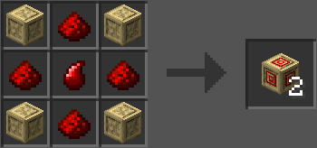

Відновлювальний блок
Відновлювальні блоки — це одні з механізмів Темної вежі, які з’являється в деяких проходах вежі. Якщо клацнути правою кнопкою миші, блоки на деякий час зникають, але через деякий час з’являються знову. Можна використовувати як примарні двері. Ці блоки можна ламати й вони випадуть, а також створювати власноруч.
- Прозорість: так (якщо ативовано)
- Світіння: 4 (якщо активовано)
- Міцність: 10
- Вибухостійкість: 35
- ID: twilightforest:reappearing_block
- Інструмент: сокира
- Поновлюваний: ні
- Складається: так (64)
- Займистий: ні
Майстрування
